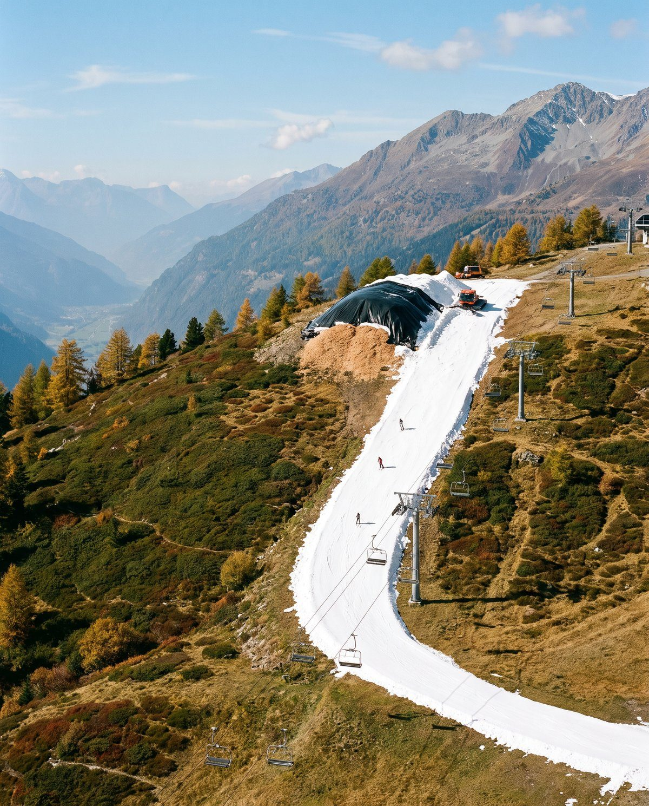

In early October, while almost every ski area in the Northern Hemisphere is still brown, people are already skiing at Levi in Finnish Lapland. There is no glacier there, and it has not been snowing. The snow on the Front Slopes was made last winter, pushed into enormous piles in spring, and kept under cover all summer long.
It is called snow farming, and a growing number of resorts and Nordic centers now open their season with it.
How do you keep snow through a whole summer?
At the end of the season, groomers push snow into a tall, tightly packed mound. Much of it is machine-made in the coldest weeks of winter, when snowmaking is cheapest. A bigger pile works better because there is less surface for the amount of snow inside, so a smaller share of it melts.
Then the whole thing gets buried. Davos, in Switzerland, covers its roughly 20,000 cubic meter pile with a 40 centimeter layer of sawdust and says about 80 percent of it is still there in autumn. At the end of October, that pile is spread out into a cross-country trail about four kilometers long.
Why sawdust, of all things?
Sawdust works partly like a blanket, but the clever part is that it stays wet. Researchers at the WSL Institute for Snow and Avalanche Research SLF in Davos measured covered piles in Davos and South Tyrol over a full summer. Most of the sun's energy never reached the snow. The damp sawdust and wood chips soaked it up, and as the moisture evaporated it carried that heat away into the air. Meltwater from the pile keeps wicking back up into the chips, so the cooling keeps going all summer.
Their model found that a 40 centimeter layer of wet sawdust and wood chips cut the energy reaching the snow about twelvefold. The Davos pile kept more than three quarters of its volume through the summer. A thinner layer loses most of the benefit, which is why the piles you see look buried rather than dusted.

Where it happens
Stored snow pays off where an early opening or a fixed race date matters more than the cost.
- Levi and Ruka, Finland Both opened the 2026–27 season on October 2 on last winter's snow. Levi stores close to 300,000 cubic meters, which also secures its early-season World Cup slalom.
- Davos, Switzerland Its pile becomes a four-kilometer cross-country trail at the end of October.
- Kitzbühel, Austria A 30,000 cubic meter depot under foil and white fleece lets it open in early November. Its white strip down a green mountain in 2019 drew criticism from environmental groups.
- Canmore Nordic Centre, Alberta Frozen Thunder has used stored snow since 2009 for a cross-country trail that opens as early as mid-October, where national teams get their first on-snow training of the year.
The Craftsbury Outdoor Center in Vermont and Baldy Mountain in British Columbia store snow the same way.
Is it worth it?
Snow farming is not free. A well-covered pile still loses a fifth to a third of its snow, more under a thin cover, and someone has to move and dispose of tons of wet sawdust. But snow made in January is far cheaper than snow made during a warm November, and a stored pile does not care whether autumn turns cold on time. For a resort that needs to open on a fixed date, or a race that cannot move, that certainty is the point.
Whether a white ribbon on a green mountain looks like smart resource management or a warning sign depends a lot on who you ask.
The GoSki app
See what GoSki does
Tap a feature to see real screens from the app.
Canmore's stored-snow track sits a short drive from Banff, and all three Banff-area ski areas are in GoSki as full 3D trail maps. So are the US resorts that race to open first every fall.
 Banff Sunshine VillageGondola to three mountains on the Continental Divide.
Banff Sunshine VillageGondola to three mountains on the Continental Divide. Lake Louise up closeZoom in and tilt to see how steep each run really is.
Lake Louise up closeZoom in and tilt to see how steep each run really is. Regular or satelliteSwitch on Satellite Overlay to see the real mountain photo.
Regular or satelliteSwitch on Satellite Overlay to see the real mountain photo. Killington, Satellite OverlayThe real mountain photo on the 3D map.
Killington, Satellite OverlayThe real mountain photo on the 3D map. Satellite Overlay up closeHigh-definition photo: every tree line, trail and lift line.
Satellite Overlay up closeHigh-definition photo: every tree line, trail and lift line. Killington from aboveEvery trail and lift over the satellite photo.
Killington from aboveEvery trail and lift over the satellite photo.The Ski Tracker follows your day: vertical, speed, distance and time, with every run drawn on the resort map and matched to the trails you skied.


Conditions on the 3D map: where the wind is strongest, which slopes are in the sun, where the wind piles powder or blows slopes bare, and how deep the snow is.


Snow, rain, temperature and wind for the days ahead at every resort, and a map of where the next storm's snow will fall. Source: NOAA.


Some features require GoSki PRO.
Sources
- Davos Klosters: 20,000 cubic meters of snow for a safe start to the season
- Grünewald, Wolfsperger and Lehning (2018), Snow farming: conserving snow over the summer season, The Cryosphere 12, 385–400
- SLF: Snowfarming, preserving snow over the summer
- Levi: Winter season opening 2026–2027
- Levi: Recycled snow secures Levi's World Cup competition
- SnowStash: Levi and Ruka snow farming, October 2026 opening
- Eye on the Arctic: Recycling snow in northern Finland for October skiers
- AFP via Phys.org: Austria's early ski slope sparks row among environmentalists
- Unofficial Networks: Kitzbühel plans Nov. 6 opening with snow saved from last winter
- Alberta Parks: Frozen Thunder, Canmore Nordic Centre
- The Weather Network: Snow farming might help the ski industry survive global warming
GoSki Stories are free to read and supported by ads. Ads and cookies